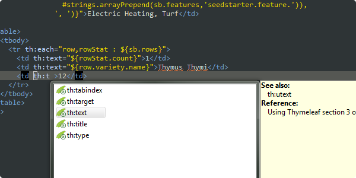

The Thymeleaf ecosystem is composed of tools and extensions of two types:
- Official extensions (a.k.a. Thymeleaf Extras): created by Thymeleaf developers supported as a part of the project.
- Unofficial or Community extensions: linked from this page but developed and maintained by Thymeleaf users outside of the Thymeleaf Project and distributed under their own license and support terms.
Official Tools & Extensions
Thymeleaf + Spring Security
https://github.com/thymeleaf/thymeleaf (lib/thymeleaf-extras-springsecurity5 and lib/thymeleaf-extras-springsecurity6)
The Thymeleaf Extras Spring Security library provides a dialect that allows integrating several authorization and authentication aspects of Spring Security (versions 5.x and 6.x) into Thymeleaf-based applications. Features:
- Thymeleaf-based equivalent to the Spring Security JSP tag library.
-
Adds new expression utility objects like
#authenticationand#authorizationfor integrating Spring Security capabilities into Thymeleaf expressions. -
Adds new attributes like
sec:authenticationandsec:authorizedfor easier configuration of security.
With this library, role-based access restrictions defined in Spring Security can be easily used:
The security-related objects can also be included in your normal Thymeleaf expressions:
Thymeleaf Testing Library
https://github.com/thymeleaf/thymeleaf (lib/testing)
The Thymeleaf Testing library allows developers to create automated tests for Thymeleaf applications and extensions in a very easy and declarative way. Among its features:
- Works as an independent library, callable from multiple testing frameworks like e.g. JUnit.
- Tests only the view layer: template processing and its result.
- Allows specifying test input as markup fragments and also as links to the template files of a Thymeleaf-based application being developed, in order to easily test its view layer.
- Versatile testing artifacts: test sequences, iteration, concurrent execution...
- Spring Framework and Spring Security integration.
Test specifications can be as simple as this:
Thymeleaf Eclipse Plugin
https://github.com/thymeleaf/thymeleaf-extras-eclipse-plugin
The Thymeleaf plugin for Eclipse IDE adds content assist features that make working in Thymeleaf templates nicer and much more comfortable.
- Code completion of Thymeleaf attribute processors.
- Detailed explanations for each attribute.
- Content assist inside expressions: expression utility objects.

Community Dialects
Developed and maintained by Thymeleaf users outside of the Thymeleaf Project and distributed under their own license and support terms.
Thymeleaf Layout Dialect
https://github.com/ultraq/thymeleaf-layout-dialect
A dialect for Thymeleaf that allows you to use layout/decorator templates to style your content, as well as pass entire fragment elements to included pages, all to help improve code reuse. If you've ever used SiteMesh for your JSPs, or Facelets with JSFs, then the concepts of this library will be very familiar to you.
Thymeleaf Spring Data Dialect
https://github.com/jpenren/thymeleaf-spring-data-dialect
This dialect uses the Spring Data pagination elements to create pagination and sorting components in the Bootstrap style.
Thymeleaf Shiro Dialect
https://github.com/theborakompanioni/thymeleaf-extras-shiro
A Thymeleaf dialect for Apache Shiro tags.
Community Integrations
Thymeleaf integrations for MVC 1.0 (JSR371)
https://github.com/inbuss/thymeleaf-mvc
https://github.com/inbuss/thymeleaf-cdi
https://github.com/inbuss/thymeleaf-jersey
An extension providing Thymeleaf as a view engine in JavaEE MVC 1.0 (JSR371) environments. Includes CDI integration that exposes named beans to expressions, and extends the Thymeleaf Conversion Service using the JAX-RS ParamConverter facility (on Jersey only); these functions are also available as separate extensions for use in non-MVC environments.
Community Tools
Bootify.io
Bootify.io is a code generator for Spring Boot. Three options can be selected for the frontend - all based on Thymeleaf, together with an optional Webpack, Bootstrap or Tailwind CSS. The user gets a customized Spring Boot app in the latest version, with Thymeleaf setup including plugins, live reload of Thymeleaf templates during development and a CRUD frontend.
Spring MVC Quickstart Maven Archetype
https://github.com/kolorobot/spring-mvc-quickstart-archetype
A maven archetype for web applications including Thymeleaf, Spring MVC, Spring Security, Bootstrap, JPA (Hibernate / HSQLDB / Spring Data JPA), mongoDB and JUnit.